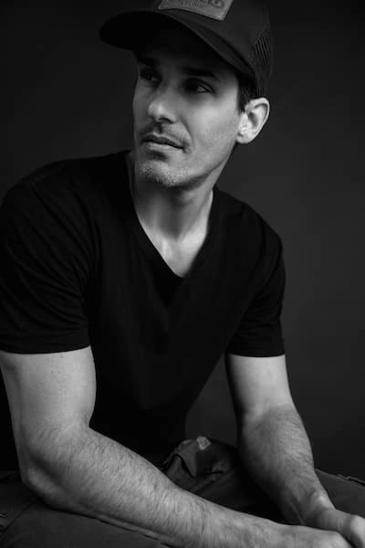

Home
About Me
Hello! My name is Matias de la Rosa, and I am a Software Development student with a passion for web development and programming. I am currently studying at BYU–Pathway Worldwide while also pursuing a university degree in Argentina. I enjoy learning new technologies, especially JavaScript, C#, and .NET, and my goal is to become a full-stack software developer. Outside of programming, I like playing padel, practicing English and French, and continuously improving my technical skills through personal projects and open-source contributions.
Student Photo

Web Certificate Courses
The total credits for course listed above is